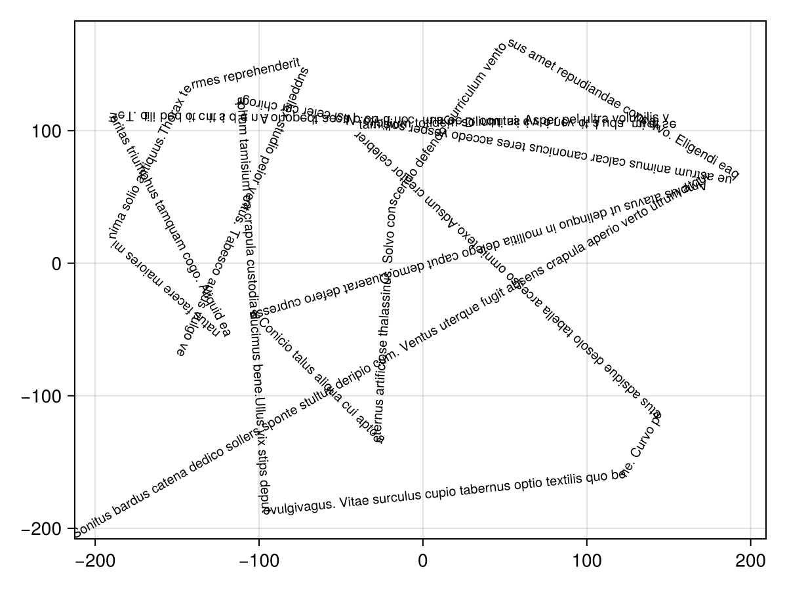
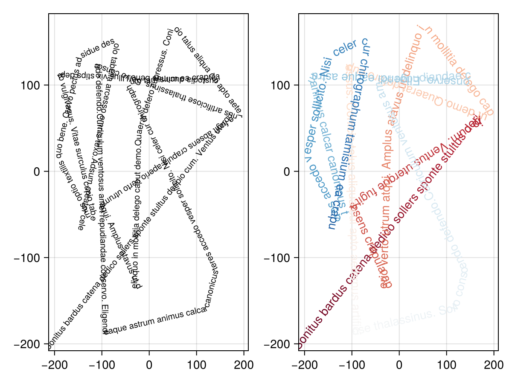

TextOnPath
TextOnPath
using ThesisArt
using CairoMakie
using RandomLet's define a (random) shape first
my_points = 400 .* (rand(MersenneTwister(1),Point2f,20).-Point2f(0.5,0.5))
my_path = ThesisArt.points_to_bezierpath(my_points)And some random text
my_text = """
Sonitus bardus catena dedico sollers sponte stultus deripio cum. Ventus uterque fugit absens crapula aperio verto utrum atqui. Amplus atavus ut delinquo in mollitia delego caput demo.
Quaerat defero cupressus. Conicio talus aliqua cui apto aeternus artificiose thalassinus. Solvo conscendo defendo.
Curriculum ventosus amet repudiandae conservo. Eligendi eaque astrum animus calcar canonicus teres accedo vesper sollicito. Nisi celer cur chirographum tamisium ea crapula custodia ducimus bene.
Ullus vix stips deputo vulgivagus. Vitae surculus cupio tabernus optio textilis quo bene. Curvo pectus adsidue desolo tabella arcesso omnis texo.
Adsum creator celebrer tamisium totidem solium tui. Asper pel ultra volubilis vestigium adulatio venio vicissitudo. Deorsum conturbo placeat depono.
Ante distinctio debilito. Temeritas triumphus tamquam cogo. Aliquid ea natus facere maiores minima solio antiquus.
Thorax termes reprehenderit suppellex studio peior ventus. Tabesco autus vulgo vestigium deludo tertius. Triduana suscipit deleniti commodo temptatio certus admoveo.
Tenetur veniam comprehendo doloribus. Ocer suspendo necessitatibus stips coerceo claro pecus adeptio facilis terreo. Carus decens careo tandem magnam strues careo canto arcesso clarus.
Baiulus tumultus accendo. Inflammatio cultura ipsam compello mollitia cultura convoco. Distinctio dicta consuasor dens corroboro.
Vicinus tutamen viscus voluptatum stipes thesis cubitum territo. Attollo aut aduro maiores ustilo id caelum. Curo alius dapifer aiunt surgo adulatio odio aperio quidem altus.
"""
my_text = replace(my_text,"\n"=>"")"Sonitus bardus catena dedico sollers sponte stultus deripio cum. Ventus uterque fugit absens crapula aperio verto utrum atqui. Amplus atavus ut delinquo in mollitia delego caput demo.Quaerat defero cupressus. Conicio talus aliqua cui apto aeternus artificiose thalassinu" ⋯ 1010 bytes ⋯ "atio cultura ipsam compello mollitia cultura convoco. Distinctio dicta consuasor dens corroboro.Vicinus tutamen viscus voluptatum stipes thesis cubitum territo. Attollo aut aduro maiores ustilo id caelum. Curo alius dapifer aiunt surgo adulatio odio aperio quidem altus."f,ax,h = pathtext(my_path,text=my_text,color = :black,fontsize=10)
Color by glyph
if a color per glyph is provided, use that color
c = CairoMakie.cgrad(:RdBu,500)|>collect|> x->x[1:500]
pathtext(f[1,2],my_path,text=my_text[1:500],color=c)
f
Color by segment
sometimes it is better to color by segment, where segments are divisions by LineTo and MoveTo in the path.
First we show how to make a break in the BezierPath
#my_points_split = Vector{Any}(deepcopy(my_points))
#my_points_split[end÷2] = NaN
#my_path_split = ThesisArt.points_to_bezierpath(my_points_split)See how we have a MoveTo in the path? We introduced it by adding a NaN into our pointlist
Next, we introduce a color per segment
#pathtext(my_path_split,text=my_text,color=[:red,:blue],fontsize=5)